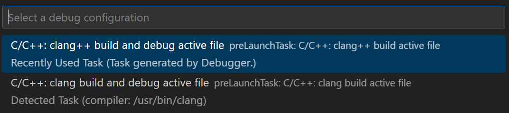
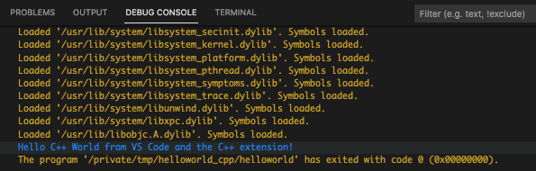
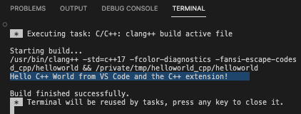
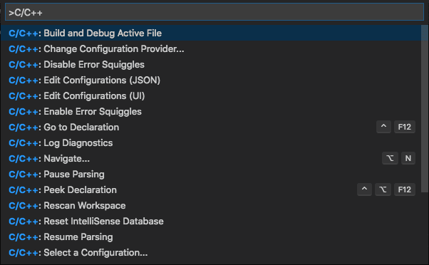
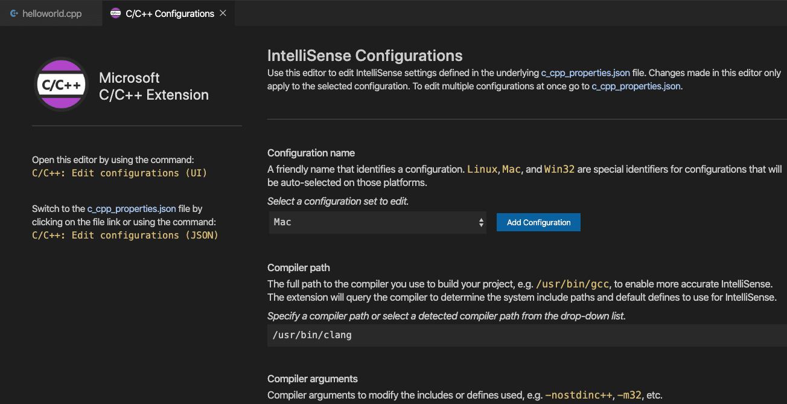

在 Visual Studio Code 中使用 Clang
在本教程中，你将在 macOS 上配置 Visual Studio Code 以使用 Clang/LLVM 编译器和调试器。
配置完 VS Code 后，你将在 VS Code 中编译和调试一个 C++ 程序。本教程不会教你 Clang 或 C++ 语言本身。关于这些主题，网上有许多优秀的资源可供参考。
如果你遇到任何问题，欢迎在 VS Code 文档仓库中为本教程提交 issue。
先决条件
要成功完成本教程，你必须完成以下步骤：
- 在 macOS 上安装 Visual Studio Code。
- 安装 VS Code 的 C++ 扩展。你可以在扩展视图 (
kb(workbench.view.extensions)) 中搜索 'C++' 来安装 C/C++ 扩展。

确保已安装 Clang
你的 Mac 上可能已经安装了 Clang。要验证它是否已安装，请打开 macOS 终端窗口并输入以下命令：
clang --version如果 Clang 未安装，请输入以下命令来安装命令行开发者工具，其中包含 Clang：
xcode-select --install创建 Hello World 应用
在 macOS 终端中，创建一个名为 projects 的空文件夹用于存放你的所有 VS Code 项目，然后创建一个名为 helloworld 的子文件夹，进入该文件夹，并通过在终端窗口中输入以下命令在该文件夹中打开 VS Code：
mkdir projects
cd projects
mkdir helloworld
cd helloworld
code .code . 命令会在当前工作文件夹中打开 VS Code，该文件夹将成为你的"工作区"。在完成本教程的过程中，你的工作区的 .vscode 文件夹中会创建三个文件：
tasks.json（编译器构建设置）launch.json（调试器设置）c_cpp_properties.json（编译器路径和 IntelliSense 设置）添加 Hello World 源代码文件
在文件资源管理器标题栏中，选择新建文件按钮并将文件命名为 helloworld.cpp。

粘贴以下源代码：
#include <iostream>
#include <vector>
#include <string>
using namespace std;
int main()
{
vector<string> msg {"Hello", "C++", "World", "from", "VS Code", "and the C++ extension!"};
for (const string& word : msg)
{
cout << word << " ";
}
cout << endl;
}现在按下 kb(workbench.action.files.save) 保存文件。请注意，你的文件会显示在 VS Code 侧边栏的文件资源管理器视图 (kb(workbench.view.explorer)) 中：

你也可以通过选择文件 > 自动保存来启用自动保存功能，以自动保存文件更改。你可以在 VS Code 的用户界面文档中详细了解其他视图。
>注意：当你保存或打开 C++ 文件时，你可能会看到来自 C/C++ 扩展的关于可用内测版的通知，内测版可以让你测试新功能和修复。你可以通过选择 X（清除通知）来忽略此通知。
探索 IntelliSense
IntelliSense 是一个帮助你更快、更高效地编码的工具，它提供了代码补全、参数信息、快速信息和成员列表等代码编辑功能。
要查看 IntelliSense 的实际效果，请将鼠标悬停在 vector 或 string 上以查看其类型信息。如果你在第 10 行输入 msg.，你可以看到一个推荐成员函数的补全列表，这些全部由 IntelliSense 生成：

你可以按 kbstyle(Tab) 键插入选中的成员。然后，当你添加左括号时，会显示该函数所需参数的信息。
如果 IntelliSense 尚未配置，请打开命令面板 (kb(workbench.action.showCommands)) 并输入 Select IntelliSense Configuration。从编译器下拉列表中选择 Use clang++ 进行配置。更多信息可在 IntelliSense 配置文档中找到。
运行 helloworld.cpp
请记住，C++ 扩展使用你机器上安装的 C++ 编译器来构建你的程序。在 VS Code 中尝试运行和调试 helloworld.cpp 之前，请确保已安装 C++ 编译器（如 Clang）。
- 打开
helloworld.cpp，使其成为活动文件。 - 按下编辑器右上角的播放按钮。

- 从系统检测到的编译器列表中选择 C/C++: clang++ build and debug active file。

系统只会在你第一次运行 helloworld.cpp 时要求你选择编译器。该编译器将成为 tasks.json 文件中设置的"默认"编译器。
- 构建成功后，你的程序输出将显示在集成调试控制台中。

恭喜！你刚刚在 VS Code 中运行了你的第一个 C++ 程序！
了解 tasks.json
第一次运行程序时，C++ 扩展会在项目的 .vscode 文件夹中创建 tasks.json。tasks.json 存储构建配置。
以下是 macOS 上 tasks.json 文件的示例：
{
"tasks": [
{
"type": "cppbuild",
"label": "C/C++: clang++ build active file",
"command": "/usr/bin/clang++",
"args": [
"-fcolor-diagnostics",
"-fansi-escape-codes",
"-g",
"${file}",
"-o",
"${fileDirname}/${fileBasenameNoExtension}"
],
"options": {
"cwd": "${fileDirname}"
},
"problemMatcher": [
"$gcc"
],
"group": {
"kind": "build",
"isDefault": true
},
"detail": "Task generated by Debugger."
}
],
"version": "2.0.0"
}>注意：你可以在变量参考中了解更多关于 tasks.json 变量的信息。
command 设置指定要运行的程序。在本例中，它是 clang++。
args 数组指定传递给 clang++ 的命令行参数。这些参数必须按照编译器期望的顺序指定。
此任务告诉 C++ 编译器获取活动文件 (${file})，编译它，并在当前目录 (${fileDirname}) 中创建一个与活动文件同名但没有文件扩展名 (${fileBasenameNoExtension}) 的输出文件（-o 开关）。此过程会创建 helloworld。
label 值是在任务列表中显示的内容，可以根据你的个人偏好设置。
detail 值是任务列表中的任务描述。更新此字符串以将其与类似任务区分开来。
problemMatcher 值选择用于在编译器输出中查找错误和警告的输出解析器。对于 clang++，$gcc 问题匹配器能产生最佳结果。
从现在开始，播放按钮始终读取 tasks.json 来决定如何构建和运行你的程序。你可以在 tasks.json 中定义多个构建任务，而标记为默认的任务就是播放按钮使用的任务。如果你需要更改默认编译器，可以在命令面板中运行 Tasks: Configure Default Build Task。或者你可以修改 tasks.json 文件，通过将以下代码段：
"group": {
"kind": "build",
"isDefault": true
},替换为：
"group": "build",来移除默认设置。
修改 tasks.json
你可以修改 tasks.json，通过使用像 "${workspaceFolder}/*.cpp" 这样的参数而不是 "${file}" 来构建多个 C++ 文件。这将构建当前文件夹中的所有 .cpp 文件。你还可以通过将 "${fileDirname}/${fileBasenameNoExtension}" 替换为硬编码的文件名（例如 "${workspaceFolder}/myProgram.out"）来修改输出文件名。
调试 helloworld.cpp
要调试你的代码，
- 回到
helloworld.cpp，使其成为活动文件。 - 通过单击编辑器边栏或对当前行使用 F9 来设置断点。

- 从播放按钮旁边的下拉菜单中选择 Debug C/C++ File。

- 从系统检测到的编译器列表中选择 C/C++: clang++ build and debug active file（你只会在第一次运行或调试
helloworld.cpp时被要求选择编译器）。
- 你将看到任务执行并将输出打印到终端窗口。

播放按钮有两种模式：Run C/C++ File 和 Debug C/C++ File。默认模式是上次使用的模式。如果你在播放按钮中看到调试图标，你可以直接选择播放按钮进行调试，而不需要选择下拉菜单项。
探索调试器
在开始逐步调试代码之前，让我们先花一点时间注意用户界面中的一些变化：
- 集成终端出现在源代码编辑器的底部。在调试控制台选项卡中，你可以看到表明调试器已启动并正在运行的输出。
- 编辑器高亮显示你在启动调试器之前设置断点的行：

- 活动栏中的运行和调试视图显示调试信息。
- 在代码编辑器的顶部，会出现一个调试控制面板。你可以通过拖拽左侧的圆点来在屏幕上移动它。

逐步调试代码
现在你可以开始逐步调试代码了。
- 在调试控制面板中选择单步跳过图标，使
for (const string& word : msg)语句被高亮显示。

单步跳过命令会跳过在创建和初始化 msg 变量时调用的 vector 和 string 类中的所有内部函数调用。注意变量窗口中的变化。msg 的内容是可见的，因为该语句已经完成。
- 再次按下单步跳过以前进到下一条语句（跳过为初始化循环而执行的所有内部代码）。现在，变量窗口会显示循环变量的信息。
- 再次按下单步跳过以执行
cout语句。 - 如果你愿意，可以一直按单步跳过直到向量中的所有单词都被输出到控制台。但如果你感到好奇，可以尝试按单步进入按钮来逐步调试 C++ 标准库中的源代码！
设置监视
你可能希望跟踪变量值在程序执行过程中的变化。你可以通过设置变量的监视来实现这一点。
- 在监视窗口中，选择加号并在文本框中输入
word。这是循环变量的名称。现在，在你逐步执行循环时查看监视窗口。

注意：监视变量的值仅在程序执行处于该变量的作用域内时可用。例如，对于循环变量，该值仅在程序正在执行循环时可用。
- 通过在循环之前添加以下语句来添加另一个监视：
int i = 0;。然后，在循环内部添加以下语句：++i;。现在像上一步一样为i添加监视。 - 你可以在执行暂停时将鼠标指针悬停在任何变量上，以快速查看其值。

使用 launch.json 自定义调试
当你使用播放按钮或 kb(workbench.action.debug.start) 进行调试时，C++ 扩展会动态创建调试配置。
在某些情况下，你可能希望自定义调试配置，例如指定在运行时传递给程序的参数。你可以在 launch.json 文件中定义自定义调试配置。
要创建 launch.json，请从播放按钮下拉菜单中选择添加调试配置。

然后你会看到一个用于选择各种预定义调试配置的下拉菜单。选择 C/C++: clang++ build and debug active file。
VS Code 会创建一个 launch.json 文件，其内容大致如下：
{
"configurations": [
{
"name": "C/C++: clang++ build and debug active file",
"type": "cppdbg",
"request": "launch",
"program": "${fileDirname}/${fileBasenameNoExtension}",
"args": [],
"stopAtEntry": false,
"cwd": "${fileDirname}",
"environment": [],
"externalConsole": false,
"MIMode": "lldb",
"preLaunchTask": "C/C++: clang++ build active file"
}
],
"version": "2.0.0"
}program 设置指定你要调试的程序。这里它被设置为活动文件文件夹 ${fileDirname} 和活动文件名 ${fileBasenameNoExtension}，如果 helloworld.cpp 是活动文件，则为 helloworld。args 属性是一个参数数组，用于在运行时传递给程序。
默认情况下，C++ 扩展不会在你的源代码中添加任何断点，且 stopAtEntry 值设置为 false。
将 stopAtEntry 值更改为 true，可以使调试器在开始调试时在 main 方法处停止。
确保 preLaunchTask 值与 tasks.json 文件中构建任务的 label 相匹配。
从现在开始，当你启动程序进行调试时，播放按钮和kb(workbench.action.debug.start)将从你的launch.json文件中读取配置。
添加其他 C/C++ 设置
要更精细地控制 C/C++ 扩展，可以创建一个 c_cpp_properties.json 文件，它允许你更改设置，例如编译器路径、包含路径、要编译的目标 C++ 标准（如 C++17）等。
通过在命令面板 (kb(workbench.action.showCommands)) 中运行 C/C++: Edit Configurations (UI) 命令来查看 C/C++ 配置用户界面。

这将打开 C/C++ 配置页面。

Visual Studio Code 将这些设置保存在 .vscode/c_cpp_properties.json 中。如果你直接打开该文件，它应该类似于以下内容：
{
"configurations": [
{
"name": "Mac",
"includePath": [
"${workspaceFolder}/**"
],
"defines": [],
"macFrameworkPath": [
"/Library/Developer/CommandLineTools/SDKs/MacOSX.sdk/System/Library/Frameworks"
],
"compilerPath": "/usr/bin/clang",
"cStandard": "c11",
"cppStandard": "c++17",
"intelliSenseMode": "macos-clang-arm64"
}
],
"version": 4
}只有当你的程序包含不在你的工作区或标准库路径中的头文件时，你才需要修改包含路径设置。
编译器路径
扩展使用 compilerPath 设置来推断 C++ 标准库头文件的路径。当扩展知道在哪里可以找到这些文件时，它就可以提供智能补全和转到定义导航等功能。
C/C++ 扩展尝试根据在系统上找到的信息，用默认的编译器位置填充 compilerPath。compilerPath 的搜索顺序如下：
- 在你的 PATH 中搜索已知编译器的名称。编译器在列表中出现的顺序取决于你的 PATH。
- 然后搜索硬编码的 Xcode 路径，例如
/Applications/Xcode.app/Contents/Developer/Toolchains/XcodeDefault.xctoolchain/usr/bin/
更多信息，请参阅 IntelliSense 配置文档。
Mac 框架路径
在 C/C++ 配置屏幕上，向下滚动并展开高级设置，确保 Mac 框架路径指向系统头文件。例如：/Library/Developer/CommandLineTools/SDKs/MacOSX.sdk/System/Library/Frameworks
疑难解答
编译器和链接错误
最常见的错误（例如 undefined _main，或 attempting to link with file built for unknown-unsupported file format 等）发生在你开始构建或调试时 helloworld.cpp 不是活动文件的情况下。这是因为编译器试图编译的不是源代码，而是像 launch.json、tasks.json 或 c_cpp_properties.json 这样的文件。
如果你看到提到 "C++11 extensions" 的构建错误，你可能没有更新你的 tasks.json 构建任务以使用 clang++ 参数 --std=c++17。默认情况下，clang++ 使用 C++98 标准，它不支持 helloworld.cpp 中使用的初始化。请确保将 tasks.json 文件的全部内容替换为运行 helloworld.cpp 部分中提供的代码块。
终端无法启动以接收输入
在 macOS Catalina 及更高版本上，即使设置了 "externalConsole": true，你也可能会遇到无法输入的问题。终端窗口会打开，但实际上不允许你输入任何内容。
此问题目前在 #5079 中跟踪。
解决方法是让 VS Code 启动一次终端。你可以通过在 tasks.json 中添加并运行以下任务来实现：
{
"label": "Open Terminal",
"type": "shell",
"command": "osascript -e 'tell application \"Terminal\"\ndo script \"echo hello\"\nend tell'",
"problemMatcher": []
}你可以通过终端 > 运行任务... 并选择 Open Terminal 来运行此特定任务。
一旦你接受了权限请求，调试时外部控制台就应该出现。
后续步骤
- 探索 VS Code 用户指南。
- 回顾 C++ 扩展概述
- 创建一个新的工作区，将你的 .json 文件复制到其中，根据新的工作区路径、程序名称等调整必要的设置，然后开始编码！